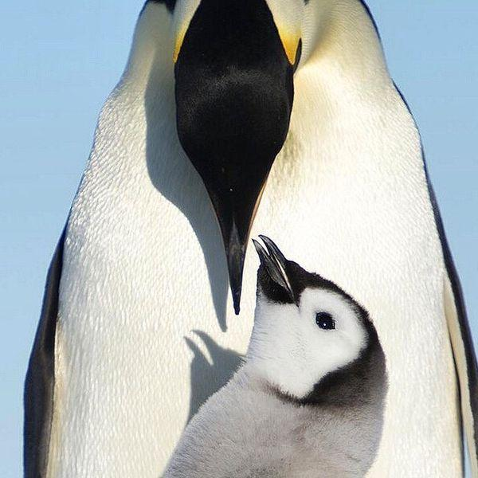

P I N G U I N O S

¿Que son?
Los pingüinos son aquellas aves que se engloban dentro de la familia Spheniscidae y a su vez dentro del orden de los Sphenisciformes.
Se trata de un grupo de aves marinas no voladoras, en el que se pueden diferenciar hasta 18 especies diferentes las cuales que se distribuyen -exceptuando el pingüino de las islas Galápagos- exclusivamente en el Hemisferio Sur.

Alimentacion
Son animales ovíparos cuyo periodo de incubación puede prolongarse entre 33 y 62 días. Se comunican a través de su graznido, mediante el cual se reconocen unos a otros, y se alimentan básicamente de peces y plancton.

Caracteristicas
- son bípedos, pero carecen de vuelo. Sus alas, adaptadas para la natación, poseen huesos comprimidos y sólidos, con articulaciones rígidas, y sus patas se ubican más atrás de lo usual, para permitirles estar de pie en lo seco, y también actuando como timones bajo el agua
- El plumaje de los pingüinos consta de tres capas distintas, de colores blancos y negros y otros rasgos variables según la especie.
- Se comunican mediante graznidos, con un nivel de especificidad tal que pueden reconocerse unos a otros en medio de ruidosas y atestadas colonias.
- Son animales sociables, formadores de extensas colonias y célebres por su monogamia.